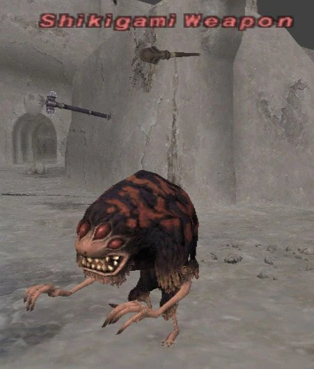

Level 75 reference · Zenith rules
|
Job: Red Mage Notorious Monster |
 Image source |


|
Zone |
Level |
Drops |
Steal |
Spawns |
Notes |
|
77-80 |
Variable throughout area |
A, L, M
| |||
|
HP = Detects Low HP; M = Detects Magic; Sc = Follows by Scent; T(S) = True-sight; T(H) = True-hearing JA = Detects job abilities; WS = Detects weaponskills; Z(D) = Asleep in Daytime; Z(N) = Asleep at Nighttime | |||||
Notes:
- Respawn Time is 21-24 hours (Earth time), directly from last Time of Death.
- Spawns with an innate Invisible effect and moves with a Flee effect while Invisible. It is also capable of warping itself around the zone while Invisible.
- This effect only disappears when the NM aggros (due to magic aggro) or links with other Weapons.
- If the NM deaggros, it will recast Invisible on itself, and most likely warp itself to a new location.
- Appears last in the Wide Scan list. It can be tracked from Wide Scan, but cannot be targeted with
/ta <scan>until it drops Invisible. - Has and uses all standard Evil Weapon attacks.
- Has a minor Auto Regen effect.
- Uses the following magic:
- Yinyang Robe has an estimated 30-40% drop rate.
In-Game Background
Adapted from Eden Wiki: Shikigami Weapon · Contributors and history · CC BY-SA 4.0. Revision 1873. Layout, links and optional background text adapted for Zenith.